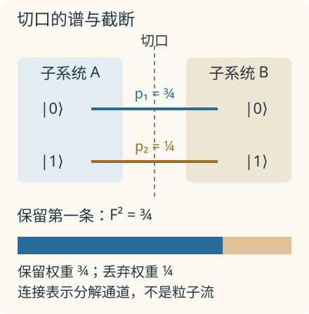

本页目录
前沿物理 I · 多体纠缠、量子相与张量网络
先修：量子比特与密度矩阵、MPS 与截断、拓扑能带。本讲进一步研究：纠缠怎样携带相的结构，为什么低纠缠不等于平庸，以及非平衡实验怎样超出基态计算。文献核查截至 2026-09-08。
两个态纠缠熵相同，为什么仍可能属于不同的相？
1. 先把一个切口算清楚
把系统分成 \(A,B\)，取纯态
只观察 \(A\)，要对 \(B\) 求偏迹。因为 \(\langle0|1\rangle=0\)，交叉项消失：
两个本征值 \(p_1,p_2\) 是 Schmidt 权重，纠缠熵为
本讲使用 bit，约定 \(0\log_20=0\)；旧 MPS 课使用自然对数，两者相差 \(\ln2\)。在 \(\theta=\pi/4\) 时整体仍是纯态，但单边熵为 1。这衡量局部忽略另一半后的不确定性，不是整体被加热了。
先预测：从 \(45^\circ\) 继续转到 \(90^\circ\)，熵会继续增大吗？交换两个 Schmidt 权重会改变熵吗？
静态后备：\(\theta=0,\pi/4,\pi/2\) 时，权重依次为 \((1,0),(1/2,1/2),(0,1)\)，熵依次是 \(0,1,0\) bit。\(\theta=\pi/6\) 时，\(p=(3/4,1/4)\)，故 \(S=2-\tfrac34\log_2 3\approx0.8113\) bit。实验只计算这一个纯态双分割，不模拟多体相变，也不测量材料的拓扑序。
2. 从谱尾到模拟成本
对多体纯态，Schmidt 分解是 \(|\Psi\rangle=\sum_i\sqrt{p_i}|i_Ai_B\rangle\)。保留前 \(\chi\) 项并重新归一化，和原态的重叠平方为
因而实际误差取决于谱尾 \(\varepsilon_\chi\)，不能只看一个熵值。若跨切口恰有 \(n\) 对独立 Bell 对，谱中有 \(2^n\) 个相等权重：\(S=n\)，精确表示至少需要 \(\chi=2^n\)。边界上每多一对纠缠，所需通道就翻倍。

定理与范围：Hastings 于 2007-05-14 提交的一维面积律证明，对满足相应局域性、有限局部维数和能隙条件的基态约束纠缠增长。这解释了许多一维基态为何可用 MPS 近似，却不覆盖任意激发态或任意二维模型。原论文
二维长条映射成一维链时，一个切口横穿整条宽度。即使纠缠服从二维面积律，所需键维也可能随条带宽度迅速增长。PEPS 把二维连接保留在网络里，但网络收缩本身仍可能困难；“能简洁表示”与“能高效算出观测量”是两项不同要求。
张量网络还能把相关长度变成可检验的数。对平移不变、规范化的 MPS，构造转移矩阵
若它可对角化，最大本征值唯一且归一为 1，其余本征值模小于 1，距离 \(r\) 的连接关联可展开成 \(C(r)=\sum_{j>1}c_j\lambda_j^r\)。若某观测量耦合到次大模本征值，其主导衰减包络满足
这里 \(r\) 以晶格间距计，\(\xi\) 也用格点数计。一个固定键维的近似可能人为产生有限相关长度：在临界点附近，看见数值相关函数指数衰减，不足以断言真实系统有隙。应增加键维并比较相关长度、谱尾和目标观测量是否收敛；能量变化很小，也不保证长程关联已经准确。这把“张量网络算得很好”变成了几个可以分别失败的检查，而非一张漂亮的拟合图。
3. 量子相还记录了对称性怎样作用
在此讨论零温、有能隙的相：若两态可沿保持相关约束且能隙不关闭的局域哈密顿量路径连接，就属于同一相的候选描述。等价的局域电路语言还需要明确热力学极限与近似条件；不能把任意全局幺正变换当作不改变相的操作。
对一维对称保护拓扑相（SPT），关键不仅是 \(p_i\)，还包括对称性在 MPS 虚拟指标上怎样表示。物理位的对称变换 \(u_g\) 可移到虚拟键上：
第二式允许相位 \(\omega\)，称为射影表示。更换 \(V_g\) 的相位会改写 \(\omega\) 的具体形式，但某些组合不能被这种重定义消掉。可算的例子是两个物理上对易的 \(\mathbb Z_2\) 对称，在边缘自由度上由 Pauli 矩阵表示：
一维数值表示只能给出 \(+1\)，因此这个负号要求非平凡的边缘表示。在相应一维有隙、对称保持条件下，它区分了不能平滑连通的相；破坏保护对称性后，这个区分可以消失。这里的机制来自对称作用，不能只从“熵很大”推断。Pollmann 等的原始研究
4. 从受保护边缘走向内禀拓扑序
SPT 依赖指定对称性；二维内禀拓扑序则涉及长程纠缠、非局域环算符与任意子等结构。对二维有隙基态，区域边界光滑且尺度大于相关长度时，熵有 \(S(A)=\alpha|\partial A|-\gamma+\cdots\) 的渐近形式；\(\alpha\) 依赖短程细节，适当区域组合可抵消边界项，提取拓扑常数。有限尺寸、角点和实验噪声会污染拟合，不能把一次截距测量当作完整相鉴定。Kitaev–Preskill 的原始推导
实验进展，首稿 2023-05-05、修订版 2024-02-14：Iqbal 等在离子阱处理器上以自适应电路制备 27 比特的 \(D_4\) 拓扑序态，并以任意子干涉检查非阿贝尔编织。其证据来自指定晶格模型与操作序列，不是发现了一种无须控制电路就天然容错的材料。论文与版本记录
实验进展，2025-09-10：Will 等报告超导处理器上的 Floquet 拓扑序，研究手性边缘动力学及任意子转化，系统最大至 58 比特。周期驱动的基本对象是一个周期的演化算符
其结构不能仅由某一瞬间的基态判断。实验将相的研究从静态能谱推进到整个驱动周期，但有限时间结果仍要检查加热、噪声与尺寸效应。原论文、期刊日期
5. 如何识别一个过强的结论
热混合态也可能有很大的局部熵，却没有量子纠缠。例如 \(\rho=I_A/2\otimes I_B/2\) 的 \(S_A=1\)，但完全可分。只有整体为纯态时，单边熵才直接充当这里的双分割纠缠量。
前沿计算还需同时报告态制备误差、截断收敛、测量开销及所检验的不变量。非平衡态的纠缠可随时间增长，使固定键维失效；观测量短时间收敛也不证明全态高保真。下一步真正的问题是：哪些相信息能用有限数据稳定提取，哪些结论只在理想态或热力学极限中成立？
6. 迁移题
- 四对 Bell 对跨过同一切口。\(S\)、精确 \(\chi\) 各是多少？若只能保留 \(\chi=4\)，最大重叠平方是多少？
- 两个态有同样的 Schmidt 权重，一个边缘表示满足 \(V_xV_z=-V_zV_x\)，另一个满足对易。只比较熵能判断它们是否属于同一对称保护相吗？若允许破坏对称性呢？
答案与推理
- 16 个权重都是 \(1/16\)，故 \(S=4\) bit、精确 \(\chi=16\)；保留四项只得 \(F^2=4/16=1/4\)。
- 熵相同没有记录射影表示的乘法关系。在上述一维有隙、对称保持的设定内，对易子符号可区分相；允许破坏保护对称性后，原来的分类条件变了，不能继续用该不变量阻止连通。
速查：纠缠、相与计算成本
- 纯态双分割：\(S=-\sum_i p_i\log_2p_i\)；截断重叠平方 \(F^2=1-\sum_{i>\chi}p_i\)。
- 一维有隙基态面积律有适用条件；固定键维不保证临界关联或长时间动力学准确。
- SPT 还需检查对称性的射影表示；二维内禀拓扑序不能由单个熵值鉴定。
- 2023 首发、2024 修订的非阿贝尔编织实验与 2025 Floquet 实验针对指定处理器模型，证据不能自动外推到天然容错材料。